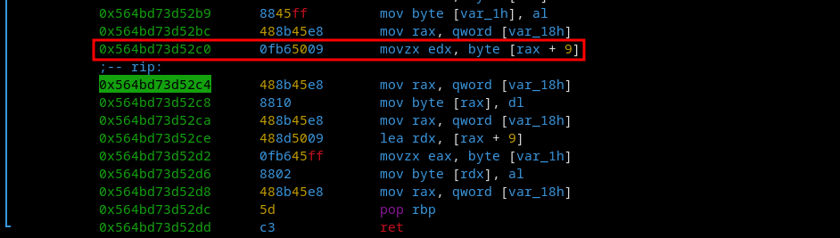

Reverse engineering a C program under linux using radare2 to find the license key.
Requirements
Linux machine
Asm knowledge
C knowledge
Info
You can download the binary here: licenseChecker
Process
It is always important to use the 'file' command to know the type of file going under analyze. We can see that it is an ELF x64 program.
It is interesting to analyze dynamically so let’s run the program. Warning: please always analyze unknown files in a sandbox so as not to be infected.
Let’s enter the test key and see what happens.
The program seems to accept license keys of 10 characters long. Let’s test with a longer key.
Using the longerpass key we realize his disability, which brings us to the point of departure. We will pass the program in dynamic analysis using the debugger.
I use Radare2 almost all the time because it is really very practical contains many features and I prefer to do as many tasks possible under terminal rather than under GUI.
Open the program in dynamic mode using the '-d' option.
It is then recommended to have knowledge of all the functions contained in the program.
3 really important functions are distinguished here: main, modify_key, check_key. We can already deduce that the program takes the key, modifies it and finally compares it with the correct key.
Break main and hit the breakpoint so we can analyze what's inside it.
Now that we are inside hand. A function catches our attention (fgets) that takes our license key and returns it to a variable. Let’s go down further in the program.
One variable immediately draws attention: var_1bh address passed to rax then content of memory at this address passed to rdi just before going into the modify_key function. We also see that the check_key function is called finally.
Let’s break this line to observe the registers and find out if our assumptions were correct. (var_1bh would contain the string that we passed to the program).
An address has been passed to the rax register. Probably that of our key entered.
By analyzing the content of this address we were right: our string is there!
We will now break to the function modify_key and step into.
We can now hit 'ds' to step into the modify_key function.
It seems that our string is passed into the variable var_18h. And then this variable is passed into rax.
By then we see that a byte will be stored in var_1h so this must be a byte to the address containing our string.
The byte at this address was stored in rax let's verify using memory analysis.
Based on assembly instructions we can see that 0x6c (l) is the byte who moved to var_1h.
Using some command line linux tools, we can verify the our suppositions: 0x6c -> 108 -> l
This instruction will zeroout the eax register.
The byte located at address rax+9 will then be moved into the edx register zeroout the rest.

Let’s calculate this address. (calc program is a homemade and can be downloaded here HexaCalc).
By analyzing this address we find that the byte 0x73 (letter s) will be moved in the edx register.
Rdx contains the letter s (0x73).
Let’s use the command line tools again: We can observe that 0x73 -> 115 -> s.
It will now write to the place of the address of rax the byte contained in rdx so the letter s will be written in the memory where was the letter l.
Our doubts were clear, the letter l was replaced by the letter s. Our key has therefore been modified!
It will now use 'lea' instruction to load in rdx the rax+9 address so end of our key. (Address 0x7fffd45efa7e) in rdx. It will then place the value of the variable var_1h in the register rax. Remember, this variable contains our letter 'l' (0x6c). Rdx containing the address of our last letter. The byte in the rax register (0x6c) will be written to the address contained in rdx.
We can also see that the address will be restored and contained in rax.
By observing the memory of the address now contained in rax. We see that the last letter is a 'l' (0x6c). We find that the first and last letter of our word have been exchanged!
Mettons un breakpoint a l’adresse de la fonction check_key et entrons dedans (step-into). Desassemblons la utilisant la commande 'pd'.
The str.correctkey will be load in rdx. we can then see it pass as argument for strcmp. We also see that the address of our key will be passed in rdi. The strcmp function is called with our key and the correctkey string as arguments. It is not difficult to understand that these two will be compared.
Let’s check all these assumptions: By analyzing the rdx register, it contains an address.
And it is the correct string key that is stored there. (00 are used in C for ' 0' the null terminator indicating a program the end of a string).
Finally we understand that the value returned by the comparison function (strcmp) will be tested and goes if not equal jump to address where the Incorrect string is retained. But if the testing is correct it will not jumper and load the string Correct in rax. The string in rax is then moved into the rdi register which serves as an argument for the output (puts function).
Let’s continue the program. Our key enters it displays 'Incorrect'.
It is easy to crack the key now: The real key is 'correctkey', our key is modified by exchanging the first and last letter. We just need to enter yorrectkec to enter the license key. We get a validation.
For the most interested of you, here is the C-program of our license checker:
You can download the source code here: licenseChecker.c
Quick bypass
We can for sure use quick bypasses to get the job done.
Modifying value in program
By modifying value of eax before it is compared we can trick program to give us correct statement.
We see we entered the wrong key but no panick. This condition test if eax is equal to 0 if yes it will go to 'Correct' otherwise it will jump to 'Incorrect'.
We see eax is set to 10 so it will jump to 'Incorrect'.
We can set the eax register to value 0 to trick program to skip the jump and modify the control flow.
By modifying it we trickier the program flow to go to 'Correct'.
Static analysis
We can use string command or use 'iz' command in r2 to get all the strings in the program.
Strings command filtering size 10 strings.
'iz' command to extract strings from program.
Going direct to the end
We can also go direct to the end of the program before the check_key function to examine memory and see the modified string.
We can set breakpoint before the check function.
Watching for memory location of our entered key.
See the string in memory with all the changes. So we discover direct swaping. I really don't like skipping parts like this since i prefer analyzing slowly code and understand what happened.
Conclusion
By reading the assembly instructions and following the program flow we can easily determine the license key and if anti-analyze measures such as modifying the user input we have learned to determine them and bypass them. We also learned some cool bypass tricks and remember the most you can read assembly the most you can start understanding any closed source code.